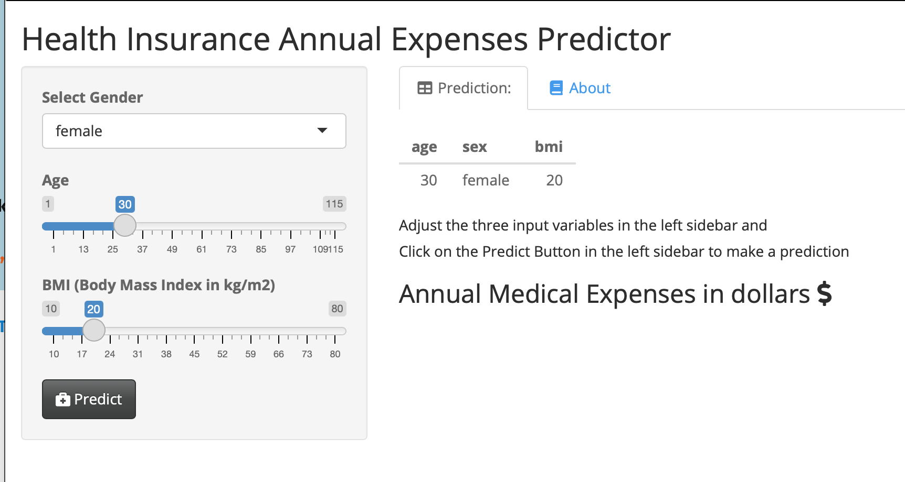
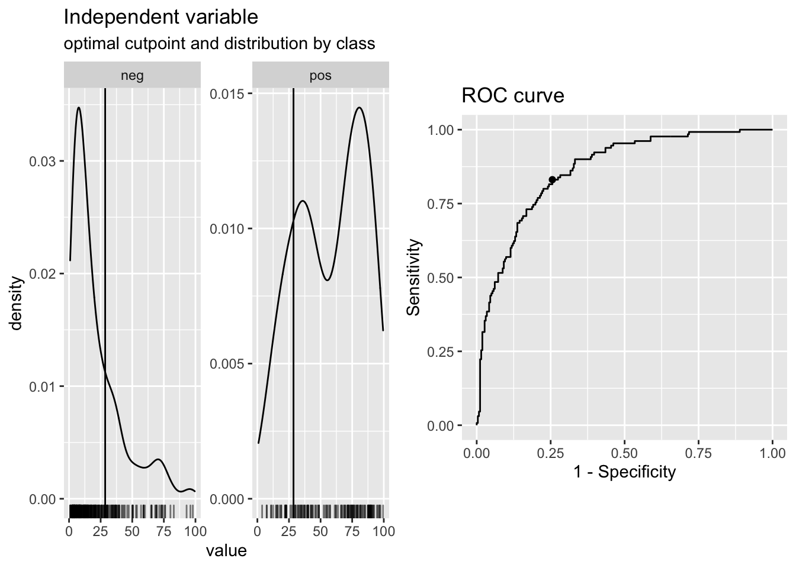
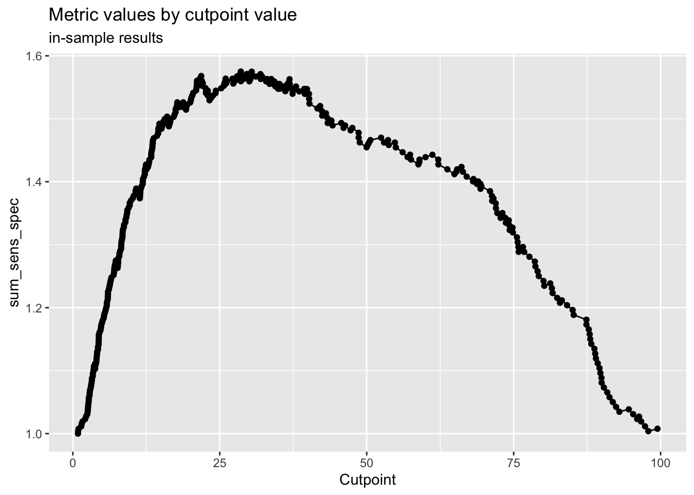

Chapter 29 Linear Regression and Broom for Tidying Models
Linear regression allows you to:
estimate the effects of predictors (independent variables) on an outcome (dependent variable), assuming that there is a linear relationship
Make predictions about future cases (patients) with their measured predictors on this continuous outcome.
Let’s look at a simple linear model to predict annual health care expenses. 
##
## Attaching package: 'cutpointr'## The following object is masked from 'package:bayestestR':
##
## auclibrary(janitor)
library(easystats)
library(medicaldata)
dm_data <- data("PimaIndiansDiabetes2", package = "mlbench")
# build model, all variables
dm_mod <- glm(diabetes ~ .,
data = PimaIndiansDiabetes2,
family = "binomial")
# output
summary(dm_mod)##
## Call:
## glm(formula = diabetes ~ ., family = "binomial", data = PimaIndiansDiabetes2)
##
## Coefficients:
## Estimate Std. Error z value
## (Intercept) -10.0407392 1.2176743 -8.246
## pregnant 0.0821594 0.0554255 1.482
## glucose 0.0382695 0.0057677 6.635
## pressure -0.0014203 0.0118334 -0.120
## triceps 0.0112214 0.0170837 0.657
## insulin -0.0008253 0.0013064 -0.632
## mass 0.0705376 0.0273421 2.580
## pedigree 1.1409086 0.4274337 2.669
## age 0.0339516 0.0183817 1.847
## Pr(>|z|)
## (Intercept) < 0.0000000000000002 ***
## pregnant 0.13825
## glucose 0.0000000000324 ***
## pressure 0.90446
## triceps 0.51128
## insulin 0.52757
## mass 0.00989 **
## pedigree 0.00760 **
## age 0.06474 .
## ---
## Signif. codes:
## 0 '***' 0.001 '**' 0.01 '*' 0.05 '.' 0.1 ' ' 1
##
## (Dispersion parameter for binomial family taken to be 1)
##
## Null deviance: 498.10 on 391 degrees of freedom
## Residual deviance: 344.02 on 383 degrees of freedom
## (376 observations deleted due to missingness)
## AIC: 362.02
##
## Number of Fisher Scoring iterations: 5## # A tibble: 9 × 5
## term estimate std.error statistic p.value
## <chr> <dbl> <dbl> <dbl> <dbl>
## 1 (Intercept) -10.0 1.22 -8.25 1.64e-16
## 2 pregnant 0.0822 0.0554 1.48 1.38e- 1
## 3 glucose 0.0383 0.00577 6.64 3.24e-11
## 4 pressure -0.00142 0.0118 -0.120 9.04e- 1
## 5 triceps 0.0112 0.0171 0.657 5.11e- 1
## 6 insulin -0.000825 0.00131 -0.632 5.28e- 1
## 7 mass 0.0705 0.0273 2.58 9.89e- 3
## 8 pedigree 1.14 0.427 2.67 7.60e- 3
## 9 age 0.0340 0.0184 1.85 6.47e- 2## # A tibble: 1 × 8
## null.deviance df.null logLik AIC BIC deviance
## <dbl> <int> <dbl> <dbl> <dbl> <dbl>
## 1 498. 391 -172. 362. 398. 344.
## # ℹ 2 more variables: df.residual <int>, nobs <int># augment data with fitted predictions and residuals
dm_data_plus <- augment(dm_mod) %>%
mutate(pct_prob = 100 * plogis(.fitted)) %>%
relocate(diabetes, .fitted, pct_prob) %>%
arrange(-.fitted)
# select a cut point for classification
cp <- dm_data_plus %>%
cutpointr(pct_prob, diabetes,
pos_class = "pos",
method= maximize_metric,
metric = sum_sens_spec)## Assuming the positive class has higher x values## # A tibble: 1 × 16
## direction optimal_cutpoint method sum_sens_spec
## <chr> <dbl> <chr> <dbl>
## 1 >= 28.5839 maximize_metric 1.57504
## acc sensitivity specificity AUC pos_class
## <dbl> <dbl> <dbl> <dbl> <chr>
## 1 0.772959 0.830769 0.744275 0.862361 pos
## neg_class prevalence outcome predictor data
## <fct> <dbl> <chr> <chr> <list>
## 1 neg 0.331633 diabetes pct_prob <tibble [392 × 2]>
## roc_curve boot
## <list> <lgl>
## 1 <rc_ctpnt [393 × 10]> NA## Method: maximize_metric
## Predictor: pct_prob
## Outcome: diabetes
## Direction: >=
##
## AUC n n_pos n_neg
## 0.8624 392 130 262
##
## optimal_cutpoint sum_sens_spec acc sensitivity
## 28.5839 1.575 0.773 0.8308
## specificity tp fn fp tn
## 0.7443 108 22 67 195
##
## Predictor summary:
## Data Min. 5% 1st Qu. Median Mean
## Overall 0.8690932 3.071251 8.953085 22.94296 33.16327
## neg 0.8690932 2.674187 6.392249 13.48437 21.10577
## pos 3.7635587 14.863216 34.854283 62.18036 57.46376
## 3rd Qu. 95% Max. SD NAs
## 53.11714 88.92870 99.46861 28.45645 0
## 28.96611 69.31582 97.91551 20.49784 0
## 80.93884 92.17256 99.46861 26.71998 0

# classify based on cut point
dm_data_plus <- dm_data_plus %>%
mutate(pred_yes_dm =
case_when(pct_prob > cp$optimal_cutpoint ~ "pred_yes_dm",
TRUE ~ "pred_no")) %>%
relocate(pred_yes_dm, .after =pct_prob)
# check confusion matrix
dm_data_plus %>%
tabyl(diabetes, pred_yes_dm) %>%
adorn_totals("both") %>%
adorn_percentages() %>%
adorn_pct_formatting()## diabetes pred_no pred_yes_dm Total
## neg 74.4% 25.6% 100.0%
## pos 17.7% 82.3% 100.0%
## Total 55.6% 44.4% 100.0%## Cannot simulate residuals for models of class `glm`.
## Please try `check_model(..., residual_type =
## "normal")` instead.# use panel = TRUE in Rmarkdown to get 2x3 panels for 6 plots
#
performance::model_performance(dm_mod)## # Indices of model performance
##
## AIC | AICc | BIC | Tjur's R2 | RMSE | Sigma | Log_loss | Score_log | Score_spherical | PCP
## --------------------------------------------------------------------------------------------------------
## 362.021 | 362.492 | 397.763 | 0.364 | 0.376 | 1.000 | 0.439 | -74.015 | 0.009 | 0.718#try a different model
dm_mod2 <- glm(diabetes ~ glucose + mass + pedigree + age,
data = PimaIndiansDiabetes2,
family = "binomial")
# build a really simple (NULL) model as a baseline
dm_mod3 <- glm(diabetes ~ 1,
data = PimaIndiansDiabetes2,
family = "binomial")
summary(dm_mod3)##
## Call:
## glm(formula = diabetes ~ 1, family = "binomial", data = PimaIndiansDiabetes2)
##
## Coefficients:
## Estimate Std. Error z value Pr(>|z|)
## (Intercept) -0.62362 0.07571 -8.237 <0.0000000000000002
##
## (Intercept) ***
## ---
## Signif. codes:
## 0 '***' 0.001 '**' 0.01 '*' 0.05 '.' 0.1 ' ' 1
##
## (Dispersion parameter for binomial family taken to be 1)
##
## Null deviance: 993.48 on 767 degrees of freedom
## Residual deviance: 993.48 on 767 degrees of freedom
## AIC: 995.48
##
## Number of Fisher Scoring iterations: 4# compare models
# compare_performance(dm_mod, dm_mod2, dm_mod3, rank = TRUE)
# plot(compare_performance(dm_mod, dm_mod2, dm_mod3, rank = TRUE)) + labs(subtitle = "Larger Area is Better")
# plot(compare_performance(dm_mod, dm_mod2, rank = TRUE)) + labs(subtitle = "Larger Area is Better")
#test_performance(dm_mod, dm_mod2, dm_mod3)
# save model to RDS
saveRDS(dm_mod, "dm_mod.RDS")This is a simple web application that lets users who are not familiar with R use your model.
They can enter values for the 3 predictor variables (gender, age, BMI) for a new patient, and predict their annual health insurance expenses in dollars. This web app produces a table with the inputs, and shows the output when you click the PREDICT button. Try it out here:
Model Predictions Shiny Web App.
Enter different predictor data points, and recalculate the expenses.
You can click on the About tab for an explanation of the model, and even explore the publicly shared underlying code on GitHub (link in the About tab).
We will walk through how to build, test, and share your own models in this chapter.
29.1 Packages needed
- {tidyverse}
- {medicaldata}
- {broom}
- {easystats} you can install this one (Not on CRAN) with
install.packages("easystats", repos = "https://easystats.r-universe.dev") - {performance}
- {insight}
- {gtsummary}
Note that the base modeling function lm() comes from the {stat} package, which loads by default when you start R.
29.2 Building a simple base model with {lm}
The simplest model is called the null model, with no predictors. This model uses the mean value of the outcome to estimate it.
In the blood_storage (prostate cancer) dataset in {medicaldata}, the mean time to recurrence is 32.92 months.
To build a simple null model, you will need two main arguments to the lm() function:
the formula
the data
The formula follows the format dependent_variable ~ independent_variables.
Note that the data argument is not the first argument, so it does not automatically play well with pipes.
You can pipe in data if you make the data argument explicit, and set it to data = .
Let’s look at a simple example:
Copy the code chunk below and run it in your RStudio Console.
##
## Call:
## lm(formula = TimeToRecurrence ~ NULL, data = .)
##
## Coefficients:
## (Intercept)
## 32.92The output tells you the Call - the model being run, and then all the coefficients.
In the case of the NULL model, the only coefficient is the intercept.
This intercept is equal to the mean value of the outcome variable, TimeToRecurrence, in months.
With no other predictor variables, this is the best estimate available for time to recurrence.
We can also output the results as a nice tibble, using the tidy() function from the {broom} package.
## # A tibble: 1 × 5
## term estimate std.error statistic p.value
## <chr> <dbl> <dbl> <dbl> <dbl>
## 1 (Intercept) 32.9 1.61 20.5 1.04e-59This model has only one term, the intercept.
It estimates every value of time to recurrence with the mean, 32.91.
This is a pretty poor model, but is a place to start.
Let’s look at how good this model is, using another function from the {broom} package.
We can glance() our model, again output into a nice tibble.
## # A tibble: 1 × 12
## r.squared adj.r.squared sigma statistic p.value df
## <dbl> <dbl> <dbl> <dbl> <dbl> <dbl>
## 1 0 0 28.6 NA NA NA
## # ℹ 6 more variables: logLik <dbl>, AIC <dbl>, BIC <dbl>,
## # deviance <dbl>, df.residual <int>, nobs <int>The r.squared and adj.r.squared are both 0, so we are capturing none of the variation in the data with this null model. The log likelihood is -1502, and the AIC 3009, and BIC 3016 (these are both high because this is a crummy model).
AIC is Akaike’s Information Criterion, and estimates the out-of-sample prediction error and relative quality of a statistical model. A higher number indicates more information lost. Lower numbers for AIC = higher quality models.
BIC is the Bayesian Information Criterion, which like AIC, penalizes models for the number of parameters to reduce overfitting. BIC also considers the number of observations in the data, which AIC does not. Lower values of BIC are better, and BIC is generally always higher than AIC, but absolute values do not matter, only relative values when comparing models on the same dataset for the same outcome. If we improve the model (with useful predictor variables), the BIC should go down.
Let’s add some predictors: Age, TVol (tumor volume), and sGS (surgical Gleason score), and see if we do better.
medicaldata::blood_storage %>%
lm(TimeToRecurrence ~ Age + TVol + sGS, data = .) %>%
broom::glance()## # A tibble: 1 × 12
## r.squared adj.r.squared sigma statistic p.value df
## <dbl> <dbl> <dbl> <dbl> <dbl> <dbl>
## 1 0.0130 0.00334 28.5 1.34 0.260 3
## # ℹ 6 more variables: logLik <dbl>, AIC <dbl>, BIC <dbl>,
## # deviance <dbl>, df.residual <int>, nobs <int>We are now explaining some (about 0.33% = 100*the adjusted R-squared) of the variation with this predictor, and the log likelihood (-1472) got closer to zero, and the AIC (2954) and BIC (2972) were reduced, showing that this is a better model than the NULL model (though still not great).
29.2.0.1 Key Takeaways
use lm() to build the model
argument: formula = outcome ~ predictor1 + predictor2 + …
argument: data = . with the pipe
tidy() from {broom} to see the model table of estimates
glance() from {broom}to see measures of model accuracy
29.2.0.2 Your turn with licorice!
Pipe the licorice data into an lm() function, with a formula argument and the data = . argument. Use the outcome of pacu30min_throatPain. Use predictors like intraOp_surgerySize, treat, preOp_pain, preOp_gender, and preOp_smoking.
Then pipe the result into the function tidy() to see the model, and (separately) into the function glance() to evaluate the model quality.
Copy the code chunk below into RStudio as a start. Use tidy() to see the model table, and glance() to look at the performance of the model.
medicaldata::licorice_gargle %>%
lm(formula = pacu30min_throatPain ~ intraOp_surgerySize +
treat + preOp_pain + preOp_gender +
preOp_smoking,
data = .) %>%
tidy()## # A tibble: 6 × 5
## term estimate std.error statistic p.value
## <chr> <dbl> <dbl> <dbl> <dbl>
## 1 (Intercept) 0.376 0.365 1.03 0.304
## 2 intraOp_surgerySize 0.316 0.143 2.21 0.0283
## 3 treat -0.690 0.154 -4.48 0.0000117
## 4 preOp_pain 1.96 0.835 2.35 0.0197
## 5 preOp_gender -0.265 0.160 -1.65 0.100
## 6 preOp_smoking 0.0652 0.0956 0.682 0.496medicaldata::licorice_gargle %>%
lm(formula = pacu30min_throatPain ~ intraOp_surgerySize +
treat + preOp_pain + preOp_gender +
preOp_smoking,
data = .) %>%
glance()## # A tibble: 1 × 12
## r.squared adj.r.squared sigma statistic p.value df
## <dbl> <dbl> <dbl> <dbl> <dbl> <dbl>
## 1 0.143 0.124 1.17 7.59 0.00000130 5
## # ℹ 6 more variables: logLik <dbl>, AIC <dbl>, BIC <dbl>,
## # deviance <dbl>, df.residual <int>, nobs <int>29.2.0.3 Interpreting the Model Estimates
For the full model with 5 predictors (shown in the hidden solution above - Click the button to show it), you get a tidied tibble with 6 rows and 5 columns. These are
- The first column is the
term- these include the (Intercept) and each of the predictors you called in the model. - the second column is the
estimate. This is the point estimate of the effect of each predictor in the multivariable model. For theintraOp_surgerySizepredictor, this is 0.316. This means that for each unit or level increase ofintraOp_surgerySize, which is defined on a 1-3 scale from small to large, thepacu_30min_throat pain(on a 0-10 scale), increases by 0.316 points. So a large surgery (2 levels larger than small) will result in, on average, apacu_30min_throat painscore 0.632 points higher than a small surgery. - similarly, the estimate for
preop_genderis -0.265. This means that for each 1 point increase in the level ofpreop_gender, coded as 0=male, 1=female, thepacu_30min_throat painscore goes doen by -0.265 points. In this case, that means that the averagepacu_30min_throat painscore in females was 0.265 points lower than in males. - the std.error column tells you about the variance of this estimate, and can help you calculate confidence intervals around the point estimated if needed.
- the statistic is the t value for the estimate, which allows you to calculate p values with a t test. Values with a large absolute value (farther from zero) imply a stronger effect. Values of the statistic > 1.96 (absolute value) correspond to a p value < 0.05.
- the p value is the significance of the estimate for that particular predictor variable. Low values (often < 0.05) are considered significant for traditional, historical reasons (it is an arbitrary cutoff).
29.2.0.4 Your turn with supra!
Use the supraclavicular dataset to build a model with the outcome onset_sensory, with predictors (independent variables) age, bmi, gender, and group.
Output the regression table with tidy() and the model measures with glance()
Copy the code chunk below into RStudio as a start
medicaldata::supraclavicular %>%
lm(formula = onset_sensory ~ age + bmi + gender + group,
data = .) %>%
glance()## # A tibble: 1 × 12
## r.squared adj.r.squared sigma statistic p.value df
## <dbl> <dbl> <dbl> <dbl> <dbl> <dbl>
## 1 0.0356 -0.00504 11.5 0.876 0.481 4
## # ℹ 6 more variables: logLik <dbl>, AIC <dbl>, BIC <dbl>,
## # deviance <dbl>, df.residual <int>, nobs <int>29.2.1 Producing manuscript-quality tables with {gtsummary}
Let’s take your model above, and rather than pipe it into tidy() or glance(), pipe it into the tbl_regression() function from the {gtsummary} package.
medicaldata::supraclavicular %>%
lm(formula = onset_sensory ~ age + bmi + gender + group,
data = .) %>%
tbl_regression()| Characteristic | Beta | 95% CI1 | p-value |
|---|---|---|---|
| age | -0.02 | -0.20, 0.15 | 0.8 |
| bmi | 0.00 | -0.39, 0.38 | >0.9 |
| gender | 3.0 | -1.9, 7.8 | 0.2 |
| group | 2.4 | -2.2, 7.1 | 0.3 |
| 1 CI = Confidence Interval | |||
This produces a nice looking table, suitable for Rmarkdown documents, with output to Word or Powerpoint. You can even convert this to other formats:
to a tibble with as_tibble()
to a gt object with as_gt() then use gt formatting
to a flextable object with as_flextable() then add formatting with flextable
29.3 Is Your Model Valid?
Key assumptions of linear regression
Homogeneity of variance (homoscedasticity): The error variance should be constant
Linearity: the relationships between the predictors and the outcome variable should be linear
Independence: The errors associated with one observation are not correlated with the errors of any other observation
Normality: the errors should be normally distributed. Technically normality is necessary only for hypothesis tests to be valid.
These assumption can be checked easily with the {performance} package in the {easystats} meta-package ({tidyverse} is another meta-package of packages).
In the code chunk below, we assign the model to the object name supra_model, and then run check_model from the {performance} package.
supra_model <- medicaldata::supraclavicular %>%
lm(formula = onset_sensory ~ age + bmi + gender + group,
data = .)
performance::check_model(supra_model, panel = FALSE)This produces a nice set of six plots in the Plots tab) with some guidance in the subtitles on how to interpret the plots.
There is a less pretty version in base R, using plot(model_name), which also works to produce four of these 6 plots.
You can also formally test for heteroscedasticity.
The variance of your residuals should be homogenous.
## OK: Error variance appears to be homoscedastic (p = 0.427).A green output that starts with OK for check_heteroscedasticity, indicating homoscedasticity (homgeneous residual variance), is good.
29.4 Making Predictions with Your Model
We can use the linear model to make predictions about the individual observations in our data, or in future data.
Let’s start with adding model predictions to each observation in our dataset.
This is often called the training data as it was the data the model was trained on.
You can add predictions (fitted results) to your dataframe with the augment() function from the {broom} package.
We augment this dataframe with the model predictions, and then relocate them to the beginning (leftmost columns) of the tibble.
supra_data_plus <- augment(supra_model) %>%
relocate(onset_sensory, .fitted, .resid) %>%
arrange(-.fitted)
supra_data_plus## # A tibble: 100 × 12
## onset_sensory .fitted .resid .rownames age bmi gender
## <dbl> <dbl> <dbl> <chr> <dbl> <dbl> <dbl>
## 1 19 16.5 2.46 52 18 22.1 1
## 2 10 16.5 -6.51 99 19 24.4 1
## 3 14 16.5 -2.50 24 19 25.1 1
## 4 4 16.5 -12.5 6 21 22.0 1
## 5 8 16.3 -8.30 87 28 30.4 1
## 6 9 16.3 -7.27 74 31 21.0 1
## 7 6 16.3 -10.3 19 28 39.8 1
## 8 39 16.2 22.8 39 31 29.6 1
## 9 38 16.2 21.8 48 32 24.4 1
## 10 3 16.2 -13.2 43 32 35.4 1
## # ℹ 90 more rows
## # ℹ 5 more variables: group <dbl>, .hat <dbl>,
## # .sigma <dbl>, .cooksd <dbl>, .std.resid <dbl>The dataframe supra_data_plus includes a prediction of the outcome (.fitted) for each observation.
We can compare these predictions to the outcome (onset_sensory) and see how the residuals (.resid) are calculated (onset_sensory minus .fitted).
The Cook’s D variable (.cooksd) is a measure of how large the effect on the model would be if you deleted that particular observation.
Large values for Cook’s distance sugest that these observations are outliers that pull the model in one direction (have high leverage), and indicate an influential data point.
Review any observation with a .cooksd > 1 carefully.
29.4.1 Predictions from new data
You can also input new observations (in a data frame) to the model, and predict the outcome for these observations. First, we need to create a dataframe that matches the predictor variables for the supra_model. You might get a dataframe of new observations from a colleague. It is important that this is in the same format, with exactly the same variable names as the original data.
new_data <- tibble(age = c(27, 38, 51),
bmi = c(30.4, 34.2, 41.1),
gender = c(2, 1, 1),
group = c(2, 1, 2))
new_data## # A tibble: 3 × 4
## age bmi gender group
## <dbl> <dbl> <dbl> <dbl>
## 1 27 30.4 2 2
## 2 38 34.2 1 1
## 3 51 41.1 1 2To make predictions with the new data, you use the base {stats} function predict(), with arguments for the model, and the new data.
## 1 2 3
## 19.27186 13.62400 15.77457This gives us predictions for each of the 3 rows of the new_data dataframe, of the outcome onset_sensory.